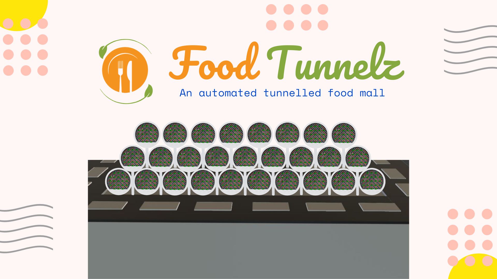

Overview
Topic
The hospitality industry is a vital industry to society all over the world. The restaurant side of the industry in India alone was valued at 4 trillion Indian Rupees as of fiscal year 2019 (Statista 2020). This market value is forecasted to hit the 6 trillion Indian Rupee mark by the fiscal year 2023, growing at a rate of 9 per cent (Press Trust of India 2019). Despite this massive growth and it being a vital part of an important industry, the industry is yet to properly implement automation, and still utilises the same old conventional methods as of 100 or 200 years ago.
Food Tunnelz is our answer to many of the problems that this industry is facing, especially during this tough time with the global COVID-19 pandemic that is affecting every country in the world. Food Tunnelz provide diners with a first of its kind automated and uninterrupted dining experience. This new and disruptive innovation will highly impact the restaurant industry through its low cost and simple method of automation.
The ultimate outcomes of our innovation are to see a significant rise in profitability of a restaurant through the achieving of reduced workforce, lower operation costs, increased table turnover and turnaround, and increased timesaving for both the diner and the restaurant.
Motivation
The pandemic situation that is affecting every country in the world at this moment has made it evidently clear the importance of the restaurant industry and has equally shown the importance of running a restaurant as efficiently as possible. Many governments have imposed curfews and restrictions on travel thus restaurants have been the only source of a meal for many. There have also been added restrictions and guidelines on the food business that many restaurants are finding it difficult to complete adhere to. Such as the functioning with only half the workforce, regular deep sanitising, and the social distancing of staff and customers (Priyadershini 2020). Not following these guidelines could put the health and safety of both the staff and customers into danger, while following these guidelines could mean an increase of cost to the operator of the restaurant.
As some countries required restaurants to operate solely on take away or delivery, another part of the food industry proving its importance (Priyadershini 2020). Home delivery. Home delivery systems such as Uber Eats and Deliveroo automated the home delivery process to a certain extent. These systems, however, could not replace the experience of dining in a restaurant. A restaurant is not merely a place where food is consumed, it is also a place for socialising, celebrating, and meeting up (Vishal 2020). An important development that has grown due to the home delivery systems are cloud kitchens. These kitchens are simply ghost kitchens that are only for the purpose of preparing food exclusively for home delivery (Colpaart 2019). They only require a small space for a kitchen and a few chefs. They do not require any space for dining.
Solving these above-mentioned problems is the main motivation for the Food Tunnelz in addition to the many benefits involved. These problems can be solved by combining the innovation of cloud kitchens with the needs of the final customer.
Landscape
As Food Tunnelz is a completely new innovation, there are currently no direct competitors with a similar operating model. However, as a part of the restaurant industry, it is important that we view home delivery systems, such as Uber Eats, Deliveroo, Doordash and Menulog, and restaurants that chose to not participate with Food Tunnelz as our competitors in the market.
The difference between Food Tunnelz and home delivery systems is that food tunnelz provides a customisable dining experience similar to what can be experienced in a restaurant, while incorporating the efficient and easy methods of ordering through a mobile application such as that in a home delivery system.
Detailed Description
Aims
Our project idea, Food Tunnelz, is a revolutionary innovation that will have a significant impact on the restaurant sector by offering diners a seamless and automated dining experience. Food Tunnelz will be a disruptive innovation because it is the first low-investment, low-maintenance, and eco-friendly way of automating the restaurant industry. When compared to traditional restaurants, Food Tunnelz franchisees will see a significant increase in profits due to which people will be motivated towards starting their restaurant business without worrying about their huge maintenance costs. It aims to be a more efficient process while satisfying many of the customer’s needs and wants in terms of the dining experience. It will also be a "COVID safe" environment, for people to socialize in the post COVID era.
Goals
In-scope of this Assignment
1. Architectural Prototype model of the Food Tunnelz
This architectural prototype would aid in visualising the design of an autonomous restaurant in a simple and straightforward manner. The prototype model consists of 3 levels of the building: Tunnels for dining; Cloud Kitchen; and Parking.
2. 3D Animated Walkthrough Video
The 3D animated walkthrough video will be helpful in explaining the working of the tunnel and the overview of the Food Tunnelz. This will include two animated characters who will walk through the process of the tunnel.
3. Design and Wireframe of the App
Diners will use the Food Tunnelz app to order food from Food Tunnelz-affiliated restaurants and have it shipped using one of the four choices available: In-Tunnel, Take-Away, Drive-Thru, and Home Delivery. The design of the software and receiving feedback from the end user will be beneficial to the project's future progress.
Out-of-scope of this Assignment
4. Register the company, and intellectual property rights.
This becomes the most important task, because people try to copy things and to safeguard from this we need to file for a patent and register our company, so that we can get started up with the business right away.
5.Make a minimum viable product (Beta version).
To validate our project concept, we expect to turn a bus into a tunnel with a small cloud kitchen, then introduce it in the market to gather input from end users.
6. Develop the App.
The app will be developed by the app developers for both iOS and Android platform. This will be developed based on the feedback received from the design.
7. Give franchises to Property Owners.
We will reach out to property owners and if they like the concept, then they can take our franchises and do business with us.
8. Help franchisees build up the entire project.
Once they are onboarded with us, we will give them our architectural design, and then they can build up their Food Tunnelz franchise.
What are the most important parts of the project?
Now that we have emphasized and defined the problems and have ideated on how to resolve them in our last assignment, it’s time to prototype and test to validate our idea and work on feedback from the end user, so that we can iterate and make our model according to the needs of the end user. And so, the 3 In-scope tasks above are the most important parts of this project, because those tasks are related to prototyping and getting feedback.
If we have only enough time or resources for one of our goals, which one should it be?
If we had only enough time or resources then a 3D Animated Walkthrough Video would be one of our objectives because it provides a thorough explanation and overview of the project, allowing even non-technical people to comprehend our model.
Which parts should have priority over the others?
Designing of the app contributes towards the biggest portion of work In-scope of the assignment and so it should be given higher priority than others.
Plans and Progress
Story behind the project idea.
The project idea is originally the brainchild of Abhinav Manohar. Below is his story of how and why he innovated and developed Food Tunnelz.
This idea occurred to me in 2020, when I returned from Bengaluru to my hometown city, Nawada (a small town in Bihar, India) and was craving to dine-out, but the city was under lockdown.
At my native place, there are no such excellent restaurants or food courts nearby and restaurants here do not provide the option of home delivery. Therefore, these businesses were making huge losses, as they were restricting the possibility of any non-direct revenue. When the lockdown was removed, the footfall of restaurants decreased because people were looking for a COVID-safe environment wherever they can. This led to the shutting down of many restaurants, as they could not afford this COVID-safe environment and could not bear the financial losses of not doing so.
During my search for a solution to this issue, I stumbled across this concept called OPODS - a low cost, micro living housing unit to ease Hong Kong’s affordable housing problems (Keegan 2018). Almost immediately after this, I stumbled across a concept of conveyor belt sushi restaurant situated in Japan (Kumm 2015). Then a few months later I came across a mud-air conditioner, which is cheap and even eco-friendly (Scroll.in 2019).
These innovations blew my mind, so I thought, why not integrate them all and create an automated, low-cost, eco-friendly restaurant? As a result of this, the concept of Food Tunnelz was born.
Now, I had the concept but was unable to implement it since I have been accepted into RMIT University in Australia. Fortunately, though, in my Intro to Information Technology course, we were asked to produce an innovative idea. Now, our team has made significant headway with this concept, having developed a prototype, a 3D walkthrough animation movie, and a mobile app design.
Details of features or outcomes of the project
3D Animated Walkthrough Video : We planned out on the following sequence of the scenes:-
• Ordering of food on the phone
• Opening the tunnel through QR code.
• Both the characters enter the tunnel and sits on the bench
• The food gets delivered through the mini lifts.
• Both the animated characters talk about the features of food tunnelz and then they enjoy the food
• Then they exit out of the tunnel
We decided to use Blender for the 3D modelling and animation, as well as Moviestorm for making animated characters' green screen videos.
Mobile App
We decided to use Figma for App Design and Wireframe with the following pages and features:
1. Splash Screen
a. Display the for 3 seconds.
2. Login Page
a. Enter phone number.
b. Use OTP to automate
c. If its new user then sends to Personal details (3a)
3. Signup – Collect personal details like name, email, etc. for signup.
4. Location setter
a. Maps that use location to find current location.
b. Change button for manual search and input.
c. If there are food tunnel franchises available send to order page. Otherwise go to error page
5. Error pages - Create several error pages for each error.
6. 4-tab Bottom Navigation (connect their respective page to the following tabs)
a. Order
b. Occasional Theme Based Dining
c. Recent Orders
d. Settings
7. Order page
Search Text box on top (Search for Dishes, Restaurants)
a. Welcome message (E.g., Welcome Eden,)
b. Slideshow (Sponsored Banners of different Restaurant)
c. Recent Searches
d. Your Favorites
e. In the spotlight! (Sponsored brands)
f. Trending dishes
g. Best rated dishes
h. Recommendations
i. Restaurant – Open and Closed
8. Your Cart
9. Payment Gateway
10. Confirmation/ Delivery Page - (Where do you want to get it delivered? - In-Tunnel, Take Away, Home Delivery, Drive Through)
If the order is for In-Tunnel, then ask for the date and time, and select the nearest franchisee of Food Tunnelz, and then like seat booking in flights we will have a tunnel booking. And after selecting the tunnel, it gets redirected to payment gateway where he pays 50% of the amount.
11. Past Orders
a. List all the orders
b. Order Status (Order Placed, In-progress, shipped (if Home Delivery), Delivered)
c. View order
d. Cancel Order – If it is an In-Tunnel order and the user cancels this order, it will be added to wallet and not be refunded to the original payment. And all other orders can be cancelled and refunded to their linked bank account.
12. Settings Page
a. My Accounts (Profile)
b. Help (FAQs and Links)
c. Address
d. Terms and Conditions
e. Logout Button
Architectural Prototype model of the Food Tunnelz
We use two big beds one above the other to divide the levels of the building. The space between the bottom one will be parking area (Basement Level - 2), and then spaces in-between the two beds would be for Cloud Kitchen (Basement Level - 1), and on top of the first bed (from top) would be for Dining Space of Food Tunnelz.
The cloud kitchen will be built on a thermocol platform coated in black chart paper, The thermocol will be divided to have space for 80 different food companies and in-between walking space. And to divide these areas we will use two toothpicks connected end to end and then plugged into the thermocol. The food company logos will be put in between the 4 sets of toothpicks which will indicate that the area has been assigned to that particular food business. Two lights will be installed in the ceiling (underneath the first bed).
The Dining space of Food Tunnelz will have two rows of Tunnels made of cardboard in cylindrical form and each of the two circular faces of the cylinder will have a window with mud a/c and a door printed on it. Each row will have 3 levels with 6, 5 and 4 tunnels respectively one above the other. The in-between spaces of these two rows will have a road and Drive-Thru and Take-Away counters on both the ends. It will also be decorated with artificial trees and grasses and toy cars. The parking area will be built on thermocol. It will have a few toy cars parked on it.
The concept of the Food Tunnelz would be fairly understood with the architectural model, 3D animated walkthrough video, and app design. They must now focus on the tasks outlined in the Out-of-scope of this Assignment section of Aims in order to bring this concept to the market.
They can use the feedback of the prototype model and design for their future development of the Food Tunnelz, and reiterate to make a model according to that.
Roles
Because assignment 3 is somewhat large, we assigned roles to each team member in our group as we divided the tasks among them. Our project idea contained three important sections: 3D animated walkthrough video, Architectural prototype model of the food tunnelz, and App Designing and wireframing using Figma.
So, we gave Karandeep Singh the role of 3d modelling artist or 3d designer for a 3d animated video. In order to complete this job, he learned how to use the online animation software Blender. He designed the entire 3D model of our project, including tunnels, benches, and lifts. Then he applied colour and textures before animating the things he developed in blender, such as the lift mechanism and conveyor belt, as well as the movement of other things.
In addition, Abhinav Manohar was given a mini project manager role because he had a better understanding of the project idea. In his job, he used polystyrene and other art crafts to make a miniature model of the project idea. He went out and purchased the supplies and tools needed for this section.
In the app designing section, because this was a large and important work, four team members were assigned to it: Ayodhya Akalanka Kodagoda, Mussab Syed, Sahibjeet Singh, and Duo Cheng as mobile app designers. They made the decision to start designing the app in Figma. They divided their work among the four individuals. The divided work included the designing of pages, such as a login page, a sign in page, an order booking page, and many others.
Scope and Limits
The scopes of FoodTunnelz application are wider than simple restaurant booking app, however narrower than food delivery apps. FoodTunnelz provides a platform to book seats in franchisees (affiliated restaurants) but does not provide delivery drivers. Delivery and other extra services are allowed but falls in the responsibility of each franchisee.
The app, by design, is strictly limited to use by restaurants who have purchased and installed the technology only, as it requires the hardware to operate properly. Restaurants are encouraged to get onboard with FoodTunnelz concept and make their environment as COVID safe as possible. We are not seeking competition with Uber Eats, Deliveroo, Menulog, etc. Thus, we are not expanding outside of the tunnel system, given there has already been a mature and fierce market of food delivery on the ground. This may limit our scope of expansion in the short term, since it will require extensive efforts for restaurants to get onboard the concept, given the cost.
However, the tunnels and cloud kitchen concept still have its limits. Though risks are minimised, it is still not 100% safe, given that diners from different sides may still gather and bring the risks with them; technology are expensive for restaurants to install, to operate, it requires up to millions of dollars for some restaurants to expand land spaces in order to match previous capacities completely in tubes; FoodTunnelz also requires sufficient space to place individual tunnels and car lanes for those who participates in drive-through takeaways, even before the sky high property prices in major cities, which can make the tube concept unfeasible; then there’s also an element missing from dining experiences which can be uncomfortable for some guests – lack of service. Users who have familiarised with traditional form of dining service can be difficult to adjust to the FoodTunnelz , which delivers meal automatically without any human interaction.
Tools and Technologies
The app for the project has been designed using Figma, a collaborative interface designing tool. Accessible online through figma.com. Figma is designed to be user friendly and does not require any previous experience in user design. It is accessible to all students through an educational licence, which allows students and educators to use Figma Pro (Figma 2021). 3D modelling was done using Blender. Blender is a free open-source 3D modelling software that allows users to create animation, visual effects, motion graphics, etc. The modelling found in this report was done on Blender Version 2.92.0 for Windows. The final animation was compiled using Moviestorm, a real-time 3d animation app. An unlimited version of Moviestorm 1.7.0 is available for free to those in education. The prototyping for this project was done using Thermocol sheets, Brown Corrugated Paper Roll, Black and Yellow chart papers, Artificial grass and trees, toy cars, two big beds stacked on one another.
Customers will use a mobile app to order their food, book their tunnel and time slot. They will also be capable of unlocking the tunnel with a QR code. To implement these technologies, we will need development environments for both IOS and Android. Xcode 12 is Apple’s integrated development environment which allows macOS users to program apps for the IOS environment for free. However, to distribute the app to customers we will be required to register as a developer so that the app can be downloaded through Apple’s App Store (LearnAppMaking 2020). Additionally, to publish on the Android platform, we will use Android Studio 4.2.1 which can be downloaded for free, although it requires either a subscription-based payment or a one-time payment to be able to publish the app to customers. The integration of a database along with a website will also be required for customers to successfully book a food tunnelz experience. The database will be managed through Microsoft SQL Server Express 2019. And the website will be coded on Microsoft’s’ Visual Studio 2019 Version 16.9.4 and ASP.Net Version 4.8.
For the implementation of mini lifts which carry the food from the cloud kitchen to each food tunnel, Arduino will be used. Arduino is an open-source mini control unit used to create and control electronic objects. Similarly, to make the lifts move upwards and downwards, we need to write a piece of code on the Arduino IDE and then put it on the Arduino board, so that it functions as expected. The food tunnelz themselves will be equipped with a projector and sound system. The implementation of which has not yet been discussed extensively, upon further exploration the exact models of the projector and speaker system will be determined.
Testing
User testing is required to test the functionality of the Food Tunnelz app. Currently the testing of the app concept will be limited to the prototyping feature on Figma. This feature allows user to interact with our UI, it is limited to button clicks and does not allow the users to perform sophisticated task such as scrolling. This prototype will only allow us to conduct user testing on the general concept of the app. We expect to perform further testing when further progress is made, including the programming of an actual app along with the production of our first food tunnelz.
To be able to test our project, we would require the input of potential clients and customers as well as other industry leaders to inform us on the trajectory of the project. To get clients on board our food tunnels we would need to understand the needs of these clients. To this extent, it would be beneficial to create sets of questionnaires, surveys and most importantly interviews to better understand the concerns and any potential clients and the challenges that come along with delivering food from a cloud kitchen.
Before deployment of a concept, it is also important to understand the suggestions and concerns of industry leaders. Our project involves the implementation of engineering, hospitality, and IT, therefore the input of leaders in all three fields is important. The engineering of the food tunnel may raise challenges and/or concerns around the logistics of engineering multiple food tunnels. Part of testing the project would be to better understand these challenges and therefore we plan to meet with engineers and discuss our plan in detail so that we can have a better understanding of the challenges associated with the deployment phase of project.
Likewise, it is important that our customers are satisfied with their experience, especially since food tunnels is a unique concept and may be viewed with scepticism. Food tunnelz will be a new experience for most customers, therefore its’ functionality must be clearly communicated to the user. To get a grasp of this unique challenge we expect to meet with leaders in the hospitality and IT industries. With the input of these industry leaders, we would better understand how to communicate with new customers at a food tunnelz location and/or through the food tunnelz app.
It will also be beneficial to better understand the concerns that potential customers may have with dining in a food tunnel. Therefore, our plan to test the concept of Food tunnel dining involves creating a mock-up cloud kitchen with a sample size of 5 food tunnels. User will be given access to the app and directed to order food through the app. Food will be delivered to them through the cloud kitchen approximating how we expect actual deployments of food tunnelz to function. To incentivise participation in our testing program, food from our cloud kitchen will be free. The target is to test 50 participants over a weeks’ period and setup surveys which each participant would fill out. By going through the whole food tunnel experience, we expect to gain insight from the users about the shortcomings of our project and potential improvements required. Successful user testing will lead to improved versions of food tunnelz better equipped for actual deployment as well as a user-friendly app that enhances the food tunnelz dining experience.
Risks
Our project is called "Food Tunnelz" for a reason. It's essentially a tunnel-based mini-restaurant where people may not only have their meal but also hold meetings. So, the first major risk we faced was the proper explanation of our project. Whenever some of our team members tried to explain our project idea to someone, they interpret something else for instance when we try to explain about our project to people, they thought that would be an underground restaurant. But in actuality only our kitchen and parking are underground, not tunnels.
Apart from that, we faced other risks, such as the fact that we wanted to do a 3D animation video, but no one in our team has any experience with 3D animation. As a result, one of our team members was tasked with 3D animation. As a result, he began learning Blender, a 3D modelling software. By watching YouTube videos and researching the internet, he acquired the fundamentals of blender.
Furthermore, we faced issues in the development of the architectural model of our project. During the lockdown, it was difficult to leave the house and purchase necessary materials and tools such as thermocol and glue.
In addition, as our team members were assigned diverse duties in the designing of our application using Figma, problems arose when some people did not know how to use Figma. They had to spend time learning Figma in order to at least do the basic designing of their designated pages. They initially found it difficult to learn, but with time and practise, they were able to do so.
Group Processes and Communications
Our performance in Assignment 1 was not at the expected standards, however it could be if our group members communicated well. In our group each member of the group is expected to attend two formal face to face meetings every week and we also try to do at least 2 informal meeting which is not recorded to discuss project ideas, tasks assigned to individuals and discuss progress.
Our group has decided to do face to face meetings using Microsoft Teams App and our group has also shared phone numbers of all team members so we can communicate easily for example asking short questions to other members thought the week so that the communication is at its best standards. If one of our group members doesn’t responds to communication or meetings a member of our group will try to call him to make sure he attends, and we may even decide another time for meeting which suits the other member as well this way we ensure that every member is present in our formal meetings to have full attendance. We also send text reminders in our group chat on the day of the meeting, to insure no one forgets to attend the meeting.
Refrences
Colpaart, A 2019, Everything You Need to Know About Cloud Kitchens (aka. Ghost Kitchens) in 2020, The Food Corridor, viewed 24 May 2021,
Figma 2021, Students and educators receive a pro license from Figma, for free, Figma, viewed 23 May 2021,
Haklander, M 2021, Mobile App versus Mobile Website Statistics: 2020 and beyond, Jmango360, viewed 20 May 2021,
Keegan, M 2018, Are Hong Kong's OPod Micro Homes a Pipe Dream?, The Culture Trip, viewed 20 May 2021,
Kumm, B W 2015, Japanese Food on a Conveyor Belt, Delicious Food and Wine, viewed 20 May 2021,
LearnAppMaking 2020, Xcode 12 Tutorial for Beginners (How To), learnappmaking.com, viewed 27 May 2021,
Press Trust of India 2019, Food service industry to touch Rs 6 trn mark by FY23, to grow at 9%: Report, Business Standard, viewed 24 May 2021,
Priyadershini, S 2020, The future of eating out in India as lockdown restrictions loosen, The Hindu, viewed 24 May 2021,
Scroll.in 2019, Eco India: How the pattern of a beehive inspired the design for an affordable, natural air cooler, YouTube, 5 October, Scroll.in, New Delhi, viewed 29 May 2021,
SocialPeta 2021, Mobile gaming industry statistics and trends for 2021, Business of Apps, viewed 20 May 2021,
Statista 2020, Market value of restaurants and food service industry in India in financial year 2019, by segment, Statista, viewed 24 May 2021,
Statista 2021, Percentage of mobile device website traffic worldwide from 1st quarter 2015 to 1st quarter 2021, Statista, viewed 20 May 2021,
Vishal, A 2020, How coronavirus could affect restaurants and the culture of eating out in India, The Economic Times, viewed 24 May 2021,